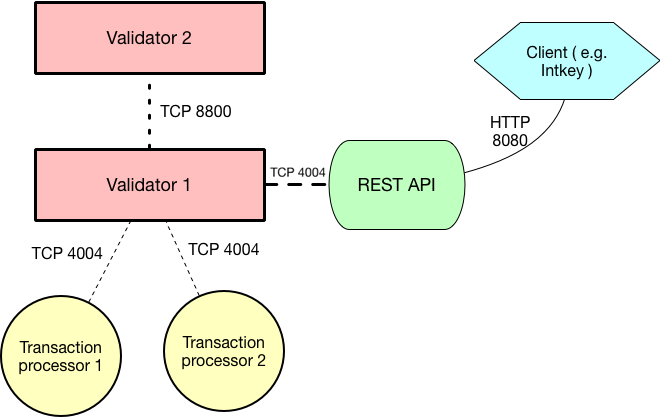

Using Sawtooth on Ubuntu 16.04¶
This procedure guides you through the process of setting up Hyperledger Sawtooth for application development on Ubuntu, introduces some of the basic Sawtooth concepts necessary for application development, and walks through performing the following tasks:
- Installing Sawtooth on Ubuntu 16.04
- Starting a Sawtooth validator and related components
- Submitting transactions to the REST API
- Viewing blocks, transactions, and state with the sawtooth CLI tool
Upon completion of this section, you will be prepared for subsequent sections that describe application development topics, such as implementing business logic with transaction families and writing clients which use Sawtooth’s REST API.
Overview of Sawtooth Components¶
A running Sawtooth network consists of the following applications or processes:
{kind=link}
This diagram represents a simple network with just two validators and two transaction processors. The second validator’s transaction processors are not depicted.
Installation¶
Installing Ubuntu¶
Ubuntu packages are provided by one of the Sawtooth package repositories: stable or nightly. We recommend using the stable repository.
To add the stable repository, run these commands in a terminal window on your host system:
$ sudo apt-key adv --keyserver hkp://keyserver.ubuntu.com:80 --recv-keys 8AA7AF1F1091A5FD
$ sudo add-apt-repository 'deb http://repo.sawtooth.me/ubuntu/1.0/stable xenial universe'
$ sudo apt-get update
To use the nightly repository, run the following commands in a terminal window on your host system:
$ sudo apt-key adv --keyserver hkp://keyserver.ubuntu.com:80 --recv-keys 44FC67F19B2466EA
$ sudo apt-add-repository "deb http://repo.sawtooth.me/ubuntu/nightly xenial universe"
$ sudo apt-get update
Caution
Nightly builds may be out-of-sync with the documentation and have not gone through long-running network testing. We really do recommend the stable repository.
Installing Sawtooth¶
Sawtooth consists of several Ubuntu packages that can be installed together
using the sawtooth metapackage. Run the following command in the same
host terminal window:
$ sudo apt-get install -y sawtooth
At any time after installation, you can view the installed sawtooth packages with the following command:
$ dpkg -l '*sawtooth*'
Validator Start-up Process¶
Creating the Genesis Block¶
In most use cases, it is not necessary to create a genesis block when starting a validator, because the validator joins an existing distributed ledger network. However, as a developer, you may often need to create short-lived test networks. In this case, you need to create a genesis block when instantiating a new network.
The genesis block contains some initial values that are necessary when a
Sawtooth distributed ledger is created and used for the first time.
One of the settings in the genesis block that should be set is the
key that is authorized to set and change configuration settings, as
shown below using the sawset genesis command.
To create the genesis block, open a new terminal window and run the following commands:
$ sawtooth keygen
$ sawset genesis
$ sudo -u sawtooth sawadm genesis config-genesis.batch
The following output appears:
Processing config-genesis.batch...
Generating /var/lib/sawtooth/genesis.batch
Note
If you need to delete previously existing blockchain data before running a validator, simply remove all files from /var/lib/sawtooth.
Starting the Validator¶
To start a validator that listens locally on the default ports, run the following commands:
$ sudo sawadm keygen
$ sudo -u sawtooth sawtooth-validator -vv
Note
The -vv flag sets the log level. To run the validator with less logging output, use -v or omit the flag.
Logging output will be printed to the validator terminal window. The validator output includes something similar to this:
[16:18:30.145 INFO chain] Chain controller initialized with chain head: None
[16:18:30.145 INFO publisher] Now building on top of block: None
Tip
If you want to stop the validator, enter CTRL-c in the validator’s terminal window. You can stop any other running Sawtooth component by entering CTRL-c in the appropriate window.
Note
By default, the validator listens on the loopback interface for both network and component communications. To change the interface and port used, the –bind flag can be used. The following command is equivalent to the default behavior:
sudo -u sawtooth sawtooth-validator -vv --bind network:tcp://127.0.0.1:8800 --bind component:tcp://127.0.0.1:4004
See Validator CLI (sawtooth-validator) for more information on the validator flags.
Note
The validator can process transactions in serial or parallel with no difference
in the state produced. To process in parallel, use the option --scheduler parallel.
The default option is --scheduler serial. To get the most benefit from the parallel option,
start multiple transaction processors for types of transactions for which there is an expected
high volume.
Starting the REST API¶
In order to configure a running validator, submit batches, and query the state of the ledger, you must start the REST API application.
Open a new terminal window, then run the following command to start the REST API and connect to a local validator:
$ sudo -u sawtooth sawtooth-rest-api -v
Running a Transaction Processor¶
Transaction processors can be started either before or after the validator is started.
The IntegerKey transaction processor is provided as a simple example of a transaction family, which can also be used for testing purposes.
Note
In a production environment, you should always run a transaction processor that supports the config transaction family. See Configuring the List of Transaction Families for more information.
To start an IntegerKey transaction processor, open a new terminal window, then run the following command:
$ sudo -u sawtooth intkey-tp-python -v
Note
By default, the transaction processor tries to connect to a local validator
on port 4004. This can be modified by passing a different endpoint as an
argument. The following endpoint argument is equivalent to the default:
intkey-tp-python -v tcp://127.0.0.1:4004
This command starts a transaction processor with an intkey handler that can
understand and process transactions from the IntegerKey transaction family.
The transaction processor produces the following output:
[23:07:57 INFO core] register attempt: OK
Configuring the List of Transaction Families¶
This section describes how to start the Settings transaction family, confirm that the REST API is running, and tell the validator or validator network to accept transactions from the IntegerKey and Settings transaction families.
Sawtooth provides a Settings transaction family that stores on-chain settings, along with a Settings family transaction processor written in Python.
Note
Sawtooth supports multiple languages for transaction processor development and includes additional transaction processors written in several languages. The following lists the processors that are included:
- settings-tp - A Settings family transaction processor written in Python
- intkey-tp-go - An IntegerKey transaction processor written in Go
- intkey-tp-java - An IntegerKey transaction processor written in Java
- intkey-tp-javascript - An IntegerKey transaction processor written in JavaScript (requires node.js)
- poet-validator-registry-tp - A transaction family used by the PoET consensus algorithm implementation to keep track of other validators
- xo-tp-javascript - An XO transaction processor written in JavaScript (requires node.js)
- xo-tp-python - An XO transaction processor written in Python
One of the on-chain settings is the list of supported transaction families. To configure this setting, use the follow steps to start the Settings family transaction processor, start the REST API, and create and submit the batch to change the settings.
Starting the Settings Family Processor¶
To start the settings family transaction processor, open a new terminal window and run the following command:
$ sudo -u sawtooth settings-tp -v
Check the validator window to confirm that the transaction processor has registered with the validator. A successful registration event produces the following output:
[21:03:55.955 INFO processor_handlers] registered transaction processor: identity=b'6d2d80275ae280ea', family=sawtooth_settings, version=1.0, namespaces=<google.protobuf.pyext._message.RepeatedScalarContainer object at 0x7e1ff042f6c0>
[21:03:55.956 DEBUG interconnect] ServerThread sending TP_REGISTER_RESPONSE to b'6d2d80275ae280ea'
Verifying That the REST API is Running¶
In order to configure a running validator, the REST API must be running. Run the following command in the terminal window in which you started the REST API:
$ ps aux | grep sawtooth-rest-api
sawtooth 2829 0.0 0.3 55756 3980 pts/0 S+ 19:36 0:00 sudo -u sawtooth sawtooth-rest-api -v
sawtooth 2830 0.0 3.6 221164 37520 pts/0 Sl+ 19:36 0:00 /usr/bin/python3 /usr/bin/sawtooth-rest-api -v
ubuntu 3004 0.0 0.0 12944 928 pts/4 S+ 19:54 0:00 grep -E --color=auto sawtooth-rest-api
If necessary, run the following command to start the REST API.
$ sudo -u sawtooth sawtooth-rest-api -v
Changing the Transaction Family Settings¶
In the example below, a JSON array is submitted to the sawset
command, which creates and submits a batch of transactions containing the
settings change.
The JSON array used tells the validator or validator network to accept transactions of the following types:
- intkey (IntegerKey transaction family)
- sawtooth_settings (Settings transaction family)
To create and submit the batch containing the new settings, open a new terminal window and enter the following commands:
$ sawset proposal create sawtooth.validator.transaction_families='[{"family": "intkey", "version": "1.0"}, {"family":"sawtooth_settings", "version":"1.0"}]'
A TP_PROCESS_REQUEST message appears in the logging output of the validator, and output similar to the following appears in the validator terminal window:
sawtooth.settings.vote.authorized_keys: 035bd41bf6ea872...
sawtooth.validator.transaction_families: [{"family": "in...
Creating and Submitting Transactions¶
The intkey command creates sample transactions of the intkey
(IntegerKey) transaction type for testing purposes.
This section guides you through the following tasks:
- Preparing a batch of IntegerKey transactions that set the keys to random values.
- Generating inc (increment) and dec (decrement) transactions to apply to the existing state stored in the blockchain.
- Submitting these transactions to the validator.
Open a new terminal window and run the following commands:
$ intkey create_batch
Writing to batches.intkey...
$ intkey load
batches: 2 batch/sec: 135.96900883377907
You can watch the processing of the transactions by observing the
logging output of the intkey transaction processor. A truncated example of
this output is shown below:
[19:29:26 INFO core] register attempt: OK
[19:31:06 INFO handler] processing: Verb=set Name=eBuPof Value=99811 address=1cf126c584128aaf1837c90c83748ab222c11b8bbd2fe6cc30f17fe35f2acb9af8efd4ee3f092b676546316cf85b2e929b68d9c5314e93ac318ba527ec74aa3ed1bc2e
[19:31:06 INFO handler] processing: Verb=set Name=HOUUQS Value=10140 address=1cf126380fa9e716a05ac815741fd1960d5952e60f8747e13334f79504c57d0287b77cf9b78284d0e1544f6f0366d66c6e6eb99dc5c154b84175b2d20008d721c7b623
[19:31:06 INFO handler] processing: Verb=set Name=lrnuDC Value=92318 address=1cf12617c797cf8c27254bbdb5c9bda09f9405b9494ae32b79b9b6d30881ca8552d5932a68f703d1b6754b9feb2edafa76a797fc0826110381b0f8614f2c6853316b47
[19:31:06 INFO handler] processing: Verb=set Name=BKaiql Value=94175 address=1cf12669cbc17d076a1accb4b0bb61f40ed4f999173b90e3ca2591875a55fee2947661e60fa1c57b41ef0f2660176b945a01c85ff645543297068a3fb1306324a19612
[19:31:06 INFO handler] processing: Verb=set Name=wpMQmE Value=47316 address=1cf1260f6bdf66b65ff7c00ec58c4deccffd167bfee7a85698880dfa485df3de1ec18a5b2d1dc12849743d1c74320108360a2d40d223b35fbc1c4ea03bbd8306480c62
[19:31:06 INFO handler] processing: Verb=set Name=GTgrvP Value=31921 address=1cf12606ac7db03c756133c07d7d02b59f3ef9eae6774fe59c75c88ab66a9fabbbaef9975dbf9aa197d1090ed126d7b18e2
Viewing Blocks and State¶
You can view the blocks stored in the blockchain and the nodes of the Merkle
tree by using the sawtooth block command.
Note
The sawtooth CLI provides help for all subcommands. For example, to get
help for the block subcommand, enter the command sawtooth block -h.
Viewing the List of Blocks¶
Enter the command sawtooth block list to view the blocks stored by the state:
$ sawtooth block list
Tip
Expand the terminal window to at least 157 characters to view all output.
The output of the command will be similar to this:
NUM BLOCK_ID BATS TXNS SIGNER
2 5d4b9ba0c9b0615fc21fa89fe88c20fc3d2e2dba02e4b5e0df15ace9283dc4c62bc7b222d897c784ec1e4cc773759837635011e35603f4e6940ebca2e154d3ba 2 10 038b5e...
1 05d2f2101d30c7d9cc31b8f416818acf55a283828fcd45052fd51359e89c3a6a60c6f87354e2000e759754bf829bd375d27fcac495a378f00179efc140f0fee9 1 1 038b5e...
0 8b2781db2a19936d8873e7e0a44c5294ea1ad110984d565c3fb669169dfd3514790405634a27225f6ab0cfd0301c434adfa5df81a221f87919c122181f344362 1 1 038b5e...
Viewing a Particular Block¶
Using the output from the sawtooth block list above, copy the block id
you want to view, then paste it in place of {BLOCK_ID} in the following
sawtooth block show command:
$ sawtooth block show {BLOCK_ID}
The output of this command will be similar to this example (truncated output shown):
batches:
- header:
signer_public_key: 0380be3421629849b1d03af520d7fa2cdc24c2d2611771ddf946ef3aaae216be84
transaction_ids:
- c498c916da09450597053ada1938858a11d94e2ed5c18f92cd7d34b865af646144d180bdc121a48eb753b4abd326baa3ea26ee8a29b07119052320370d24ab84
- c68de164421bbcfcc9ea60b725bae289aecd02ddde6f520e6e85b3227337e2971e89bbff468bdebe408e0facc343c612a32db98e5ac4da2296a7acf4033073cd
- faf9121f9744716363253cb0ff4b6011093ada6e19dae63ae04a58a1fca25424779a13628a047c009d2e73d0e7baddc95b428b4a22cf1c60961d6dcae8ee60fa
header_signature: 2ff874edfa80a8e6b718e7d10e91970150fcc3fcfd46d38eb18f356e7a733baa40d9e816247985d7ea7ef2492c09cd9c1830267471c6e35dca0d19f5c6d2b61e
transactions:
- header:
batcher_public_key: 0380be3421629849b1d03af520d7fa2cdc24c2d2611771ddf946ef3aaae216be84
dependencies:
- 19ad647bd292c980e00f05eed6078b471ca2d603b842bc4eaecf301d61f15c0d3705a4ec8d915ceb646f35d443da43569f58c906faf3713853fe638c7a0ea410
family_name: intkey
family_version: '1.0'
inputs:
- 1cf126c15b04cb20206d45c4d0e432d036420401dbd90f064683399fae55b99af1a543f7de79cfafa4f220a22fa248f8346fb1ad0343fcf8d7708565ebb8a3deaac09d
nonce: 0x1.63021cad39ceep+30
outputs:
- 1cf126c15b04cb20206d45c4d0e432d036420401dbd90f064683399fae55b99af1a543f7de79cfafa4f220a22fa248f8346fb1ad0343fcf8d7708565ebb8a3deaac09d
payload_sha512: 942a09c0254c4a5712ffd152dc6218fc5453451726d935ac1ba67de93147b5e7be605da7ab91245f48029b41f493a1cc8dfc45bb090ac97420580eb1bdded01f
signer_public_key: 0380be3421629849b1d03af520d7fa2cdc24c2d2611771ddf946ef3aaae216be84
header_signature: c498c916da09450597053ada1938858a11d94e2ed5c18f92cd7d34b865af646144d180bdc121a48eb753b4abd326baa3ea26ee8a29b07119052320370d24ab84
payload: o2ROYW1lZnFrbGR1emVWYWx1ZQFkVmVyYmNpbmM=
Viewing Global State¶
Use the command sawtooth state list to list the nodes in the Merkle tree:
$ sawtooth state list
The output of the command will be similar to this truncated list:
ADDRESS SIZE DATA
1cf126ddb507c936e4ee2ed07aa253c2f4e7487af3a0425f0dc7321f94be02950a081ab7058bf046c788dbaf0f10a980763e023cde0ee282585b9855e6e5f3715bf1fe 11 b'\xa1fcCTdcH\x...
1cf1260cd1c2492b6e700d5ef65f136051251502e5d4579827dc303f7ed76ddb7185a19be0c6443503594c3734141d2bdcf5748a2d8c75541a8e568bae063983ea27b9 11 b'\xa1frdLONu\x...
1cf126ed7d0ac4f755be5dd040e2dfcd71c616e697943f542682a2feb14d5f146538c643b19bcfc8c4554c9012e56209f94efe580b6a94fb326be9bf5bc9e177d6af52 11 b'\xa1fAUZZqk\x...
1cf126c46ff13fcd55713bcfcf7b66eba515a51965e9afa8b4ff3743dc6713f4c40b4254df1a2265d64d58afa14a0051d3e38999704f6e25c80bed29ef9b80aee15c65 11 b'\xa1fLvUYLk\x...
1cf126c4b1b09ebf28775b4923e5273c4c01ba89b961e6a9984632612ec9b5af82a0f7c8fc1a44b9ae33bb88f4ed39b590d4774dc43c04c9a9bd89654bbee68c8166f0 13 b'\xa1fXHonWY\x...
1cf126e924a506fb2c4bb8d167d20f07d653de2447df2754de9eb61826176c7896205a17e363e457c36ccd2b7c124516a9b573d9a6142f031499b18c127df47798131a 13 b'\xa1foWZXEz\x...
1cf126c295a476acf935cd65909ed5ead2ec0168f3ee761dc6f37ea9558fc4e32b71504bf0ad56342a6671db82cb8682d64689838731da34c157fa045c236c97f1dd80 13 b'\xa1fadKGve\x...
Note
An address is equivalent to a node id.
Viewing Data in a Node¶
You can use sawtooth state show command to view data for a specific node.
Using the output from the sawtooth state list command above, copy the
node id you want to view, then paste it in place of {NODE_ID} in the
following command:
$ sawtooth state show {NODE_ID}
The output of the command will be similar to this:
DATA: "b'\xa1fcCTdcH\x192B'"
HEAD: "0c4364c6d5181282a1c7653038ec9515cb0530c6bfcb46f16e79b77cb524491676638339e8ff8e3cc57155c6d920e6a4d1f53947a31dc02908bcf68a91315ad5"